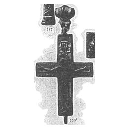
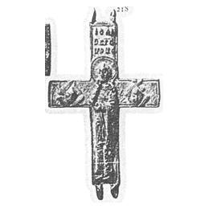

Catalog › CE-0095 · KHA1900-220b
Encolpion de aramă cu Răstignirea și Sf. Ioan Teologul pe revers
XII в. (1101–1200) · Între Knjaža Gora și Mar'ina Gora, ținutul Cerkasî, gubernia Kiev, Ucraina · Colecția V. V. Tarnovski (descris la Khanenko 1900), inv. Tarnovski nr. 1696
double-sided reliquary cross (enkolpion), aramă; XII в. (1101–1200); found at Între Knjaža Gora și Mar'ina Gora, ținutul Cerkasî, gubernia Kiev, Ucraina; kept at Colecția V. V. Tarnovski (descris la Khanenko 1900).




Identificare
- Categorie
- Encolpion bivalv (relicvar)
- Material
- Aramă
- Tehnică
- Turnare în relief
Iconografie
- Descriere avers
- Pe jumătatea din față, Răstignirea în relief; sub brațele Mântuitorului inscripția ІС ХС НІ КА; deasupra capului Mântuitorului, veșmântul și sulița.
- Revers
- Sf. Ioan
- Descriere revers
- Pe jumătatea din spate, Sf. Ioan Teologul în picioare, în relief, cu inscripție în trei rânduri deasupra; la stânga un heruvim, la dreapta un serafim, fiecare cu inscripție.
- Inscripții
- față: ІС ХС НІ КА; revers: ІОАНН БОГОСЛОВ (trei rânduri); ХЕРОВИМ; СЕРАФИМ
Datare și atribuire
- Datare
- XII в. (1101–1200)
- Centru
- Necunoscut
Descoperire
- Localitate
- Între Knjaža Gora și Mar'ina Gora
- Regiune
- ținutul Cerkasî, gubernia Kiev
- Țară
- Ucraina
- Context
- Necunoscut
- Coordonate
- 49.7373° N, 31.5053° E
- Precizia locului
- Doar localitatea
Păstrare și referințe
- Colecție
- Colecția V. V. Tarnovski (descris la Khanenko 1900)
- Nr. inventar
- Tarnovski nr. 1696
- Bibliografie
- B. I. și V. N. Khanenko, Древности русскія. Кресты и образки, вып. II (Собраніе Б. И. и В. Н. Ханенко), Kiev, 1900 [Khanenko 1900], cat. nr. 220 б., Tabl. XVIII, reprodusă la Табл. XVIII, fig. 220 б. (două figuri: față și revers) (planșa de la p. 13 a PDF-ului).
- Figura
- Табл. XVIII, fig. 220 б. (două figuri: față și revers)
- Planșe
- Khanenko 1900, Табл. XVIII (planșă fără paginație tipărită; p. 13 în PDF)
- Observații
- Datare după Khanenko: XII в. Ureche în formă de două trunchiuri de con așezate cu bazele lipite; laturile sunt drepte. Obiect din colecția V. V. Tarnovski, nr. 1696 în catalogul acestuia. Inscripțiile sunt date în sursă în caractere decorative; aici în formă normalizată. Coordonate: ale localității (aproximative), nu date în sursă.
Citare: Corpus Encolpiorum, CE-0095, Encolpion de aramă cu Răstignirea și Sf. Ioan Teologul pe revers, https://vitaliejosanu1979-ux.github.io/primul-meu-proiect/piese/KHA1900-220b/ (accesat 2026-10-17).